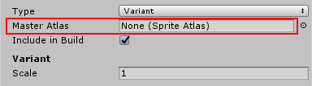
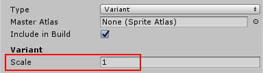

A Variant Sprite Atlas is a type of Sprite Atlas that does not contain its own list of selected Textures as it has no Objects for Packing list in its properties. Instead, it receives a copy of the content from the Sprite Atlas set as its Master Atlas.
Variant Sprite Atlases are an optional step in the Sprite Atlas Workflow. Their main purpose is to create a variation of another Sprite Atlas’ Textures but with a different scaled resolution.
To create a Variant Sprite Atlas:.
Prepare the Sprite Atlas that will be the Variant Atlas’ Master Atlas. It contains the Texture Assets that the Variant Atlas will derive its own content from.
Assign the Sprite Atlas prepared in Step 1 to this property to set it as the Variant’s Master.

As a Variant Atlas without a Master Atlas contains no content on its own, Unity will not pack it into a .spriteatlas Asset.
In a Project that includes both a Master and a Variant Sprite Atlas, if both are Included in the Build, then the Textured used by mutual Sprites can come from either Sprite Atlas (refer to Scenario 3 of the Resolving different Sprite Atlas scenarios page).
To automatically load Sprite Textures from the Variant Atlas instead of the Master Atlas, enable Include in Build for the Variant Atlas only and disable it for the Master Atlas. The build then automatically loads the Variant Sprite Atlas instead of the Master Atlas at run time.
Scale the Textures of a Variant Sprite Atlas
A Variant Sprite Atlas scales the Textures it gets from its Master Atlas via its Scale property. The resolution of the Variant Atlas’ Texture is the result of the Master Atlas’ Texture multiplied by the Scale factor.
Set the Scale of the Variant Atlas from the range of 0.1 to 1:

Create multiple Variant Atlases with the same Master Atlas and different Scale values to create lower-resolution copies of the Atlas Texture. This is useful if you want to create various Variant Atlases for a range of platforms with different hardware limitations.